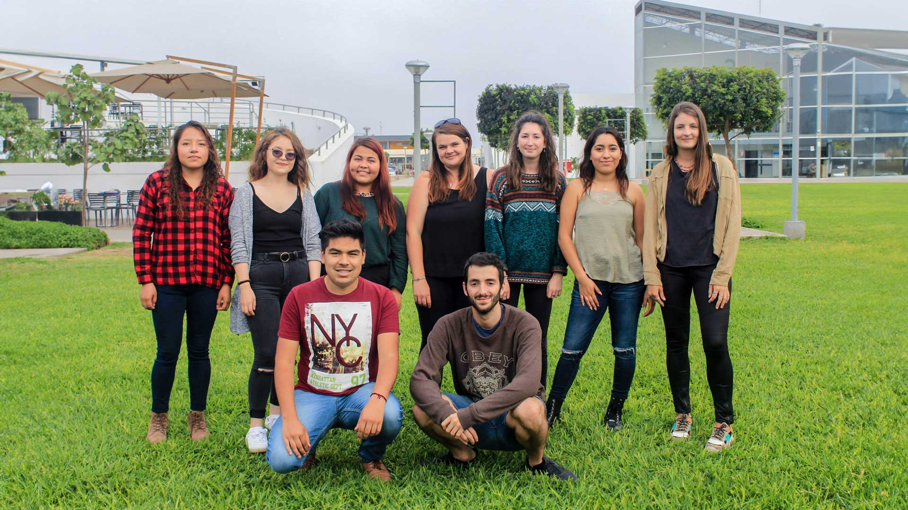

Una universidad líder en educación superior en Perú, comprometida con la excelencia académica y el desarrollo integral de sus estudiantes.

Nuestra Universidad forma líderes comprometidos con el desarrollo humano, social y ambiental.
Ofrecemos educación de calidad para el mundo laboral, basadas en una educación personalizada
y en el acercamiento a su profesión desde el primer ciclo.
Contamos con una moderna infraestructura y los componentes necesarios para convertirte en un
profesional competitivo. Contamos con cinco facultades de Ciencias de la Salud, Ciencias Ambientales,
Ciencias Empresariales, Ciencias Humanas y Ciencias Veterinarias y Biológicas.
También contamos con una Escuela de Posgrado donde ofrecemos importantes Maestrías, Especialidades,
Diplomados, Programas de Especialización y cursos en Salud, Ambiente, Veterinaria y otras áreas.
Misión
Mejoramos, Cuidamos y Transformamos vidas.
Visión
Ser la universidad con el más alto valor percibido en prestigio, responsabilidad social, innovación,
compromiso ambiental e investigación a nivel regional, de alta calidad e inclusiva, que contribuye
al éxito y bienestar de sus estudiantes mediante una formación humanista y de excelencia.
Ahora estás más cerca de formar parte de la Científica. Te invitamos a participar en el proceso de admisión.
Campus Villa
Panamericana Sur Km 19, Villa
(+51) 955 656 442
Campus Norte
Cruce de la Av. Alfredo Mendiola y Av. 2 de Octubre en Los Olivos. (Referencia Óvalo Infantas)
(+51) 955 656 442
Campus Ate
Av. Nicolás Ayllón, 7208 (Altura del km 10.3 de la Carretera Central)
(+51) 955 656 442
Campus Aramburú
Av. República de Panamá 3944
(+51) 955 656 442